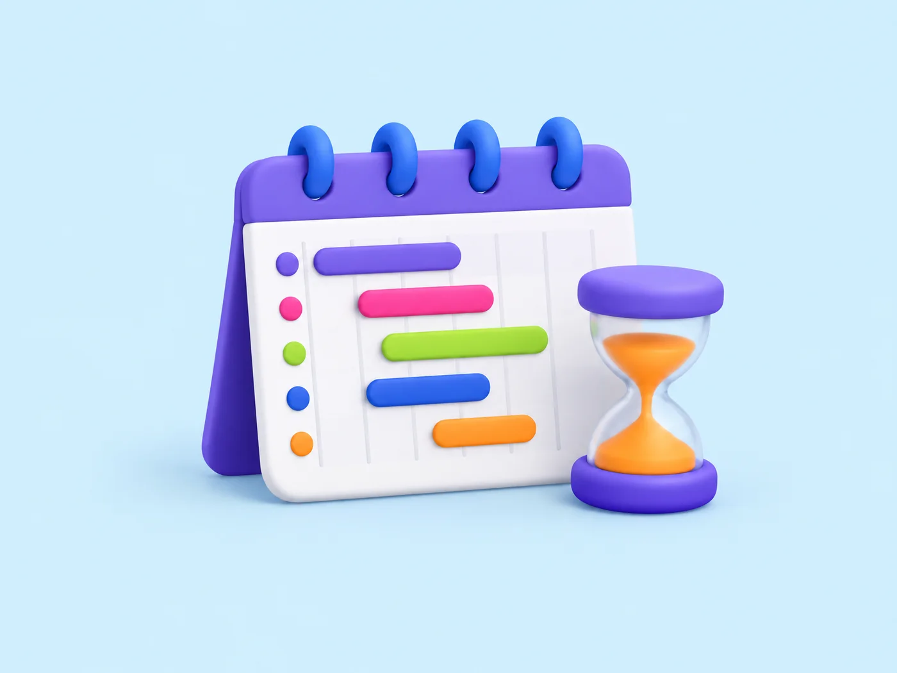
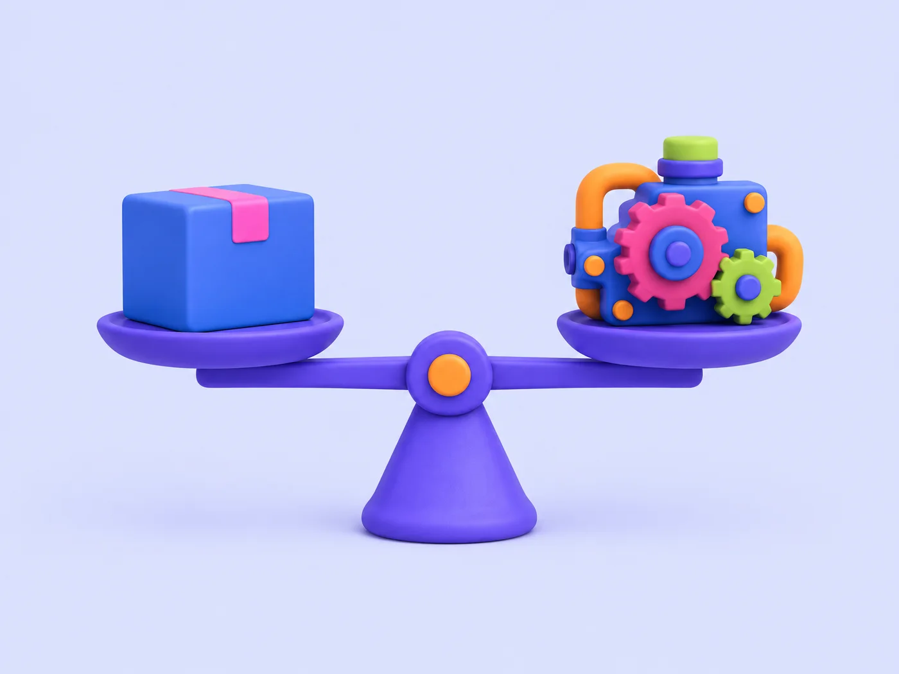
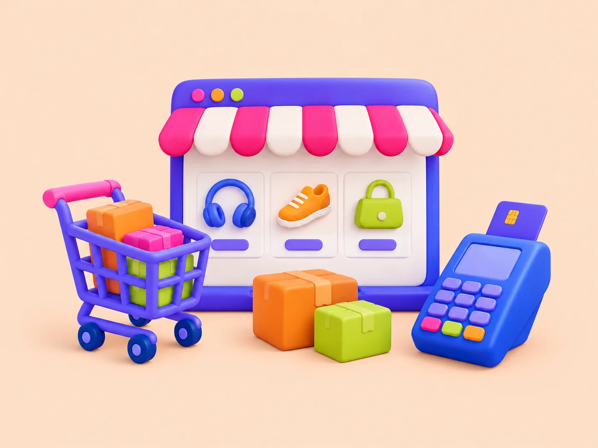

- Home
- Guides
Practical guides on software, AI and cloud
[draft: one or two sentences on who the guides are for and how they are written]
Software development
Custom Software Development Cost: Scope, Estimates and Tradeoffs
[draft: two sentences on what drives a custom software estimate]
Read the guideTopics
[draft: topics heading]
[draft: one or two sentences on how the guides are grouped]
SEO Cost in India: Scope, Fees and What to Compare
[draft: what a monthly SEO fee should cover]
By Killol Desai [draft: read time]
Search and paid marketingHow Long Does SEO Take? Milestones and Dependencies
[draft: typical milestones and what slows them down]
By Killol Desai [draft: read time] Search and paid marketingSEO Audit Checklist for a Business Website
[draft: the technical, content and link checks in an audit]
By Killol Desai [draft: read time] Search and paid marketingHow to Evaluate an SEO Agency: Scope, Evidence and Reporting
[draft: questions to ask before signing an SEO contract]
By Killol Desai [draft: read time] Search and paid marketingSEO for Small Businesses: Priorities Before Scaling Content
[draft: which SEO tasks to fix first on a small budget]
By Killol Desai [draft: read time]
Search and paid marketingSEO vs PPC: Budget, Timeline and Lead Quality
[draft: how the two channels compare on cost and speed]
By Killol Desai [draft: read time] Search and paid marketingSEM, SEO and PPC: What Each Service Includes
[draft: what each term covers so quotes can be compared]
By Killol Desai [draft: read time] Search and paid marketingGoogle Ads Management Cost: Fees vs Advertising Spend
[draft: how management fees relate to the ad budget]
By Killol Desai [draft: read time] Search and paid marketingPPC Audit Checklist: Tracking, Search Terms and Landing Pages
[draft: tracking, search term and landing page checks]
By Killol Desai [draft: read time] Search and paid marketingWhy Google Ads Generate Clicks but Few Qualified Leads
[draft: common causes of clicks without enquiries]
By Killol Desai [draft: read time] Search and paid marketingPPC Landing Page Checklist for Better Enquiries
[draft: page elements to review on a paid search landing page]
By Killol Desai [draft: read time] Search and paid marketingHow to Preserve Search Visibility During a Website Redesign
[draft: redirects and checks that protect rankings during a redesign]
By Killol Desai [draft: read time] Websites and eCommerceWebsite Redesign Checklist: Content, SEO and Launch
[draft: checks for content, search and launch day]
By Killol Desai [draft: read time] Websites and eCommerceWebsite Development Cost in India: What Changes the Quote?
[draft: the scope items that move a website quote]
By Killol Desai [draft: read time] Websites and eCommerceWordPress vs a Custom Website: Choosing for Your Business
[draft: when a CMS is enough and when custom is worth it]
By Killol Desai [draft: read time] Websites and eCommerceB2B Website Conversion Checklist for Qualified Enquiries
[draft: page elements that turn visitors into qualified enquiries]
By Killol Desai [draft: read time]
Websites and eCommerceeCommerce Website Cost: Features, Integrations and Support
[draft: store features, third-party integrations and ongoing support]
By Killol Desai [draft: read time] Software developmentCustom Software vs Off-the-Shelf: A Buyer’s Decision Guide
[draft: when a packaged tool fits and when a custom build pays off]
By Killol Desai [draft: read time] Software developmentWhat to Prepare Before Requesting a Software Development Quote
[draft: the brief, users and constraints to gather before asking for quotes]
By Killol Desai [draft: read time] Software developmentWhat Determines a Custom Software Development Timeline?
[draft: the factors that move a delivery date]
By Killol Desai [draft: read time] Software developmentMVP Development Cost and Scope Planning
[draft: how to cut an MVP to what a first release needs]
By Killol Desai [draft: read time] Software developmentMVP vs Prototype vs Proof of Concept
[draft: what each one is for and which to commission first]
By Killol Desai [draft: read time] Software developmentSaaS Development Cost: Product Scope and Operating Costs
[draft: build cost plus the running costs of a SaaS product]
By Killol Desai [draft: read time]
Newsletter
[draft: newsletter heading]
[draft: one sentence on what subscribers receive and how often]
Ready to scope your project?
Tell us what you need built. A short brief is enough to start the conversation.